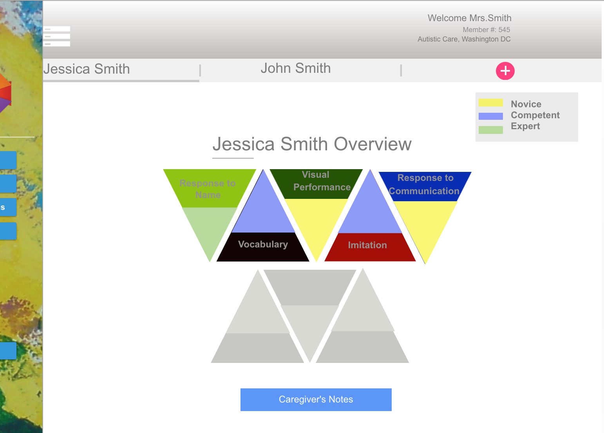

Concept
Autism is a neurodevelopmental disorder characterized by impairments in communication, behavior and social interaction. Research claims that early intervention and treatment can be the key to improvement.
As the final project for Health and Computation at Cornell University, our team of 5 students addressed the grand challenge of addressing issues faced by autistic children in their early years of development.
We developed the design concept of Autino an intervention-based ambient installation to be used by autistic children at schools. The team created a prototype for reporting data that would enable stakeholders -caregivers, parents and clinicians - to identify the best, opportunistic time to apply evidence-based interventions.
Interested to know more?
Role in Project

UX Research
Design conceptualization, research of existing technologies, identification of problem space, brainstorming and ideation.

Wireframing and Low Fidelity Prototype
Designed the UI and interaction flow of data-reporting interface for parents to make evidence based interventions.
Process
-
What are the existing solutions and their limitations?
Existing solutions were categorized under – Smartwear, Applications & Wearables. Their limitations include:
Lack of evidence-based interventions,
Challenges in data collection,
Lack of continuous interventions &
Lack of unobtrusive sensory interventions -
Research and Analyze the field
Processed information gathered from relevant research and academic papers, particularly focusing on the work of Dr. Gregory Abowd. We used affinity diagrams to categorize collected information.
-
Brainstorm and Design Interventions
Information gathered were funneled down for 3 main stakeholders - caregivers, parents and clinicians - on the type of assessment including Response to name, Vocabulary, Visual performance, Imitation, Reception & Expression), measure of response . We used Coggles to identify general methods of measurements and for each type of response. Aspects to be displayed for each stakeholder was also identified. See the ideation map in detail.

-
Wireframing
Wireframed the UI for parents to view the recorded data.
-
High Fidelity Prototype
Designed the high fidelity prototype using UXpin.
